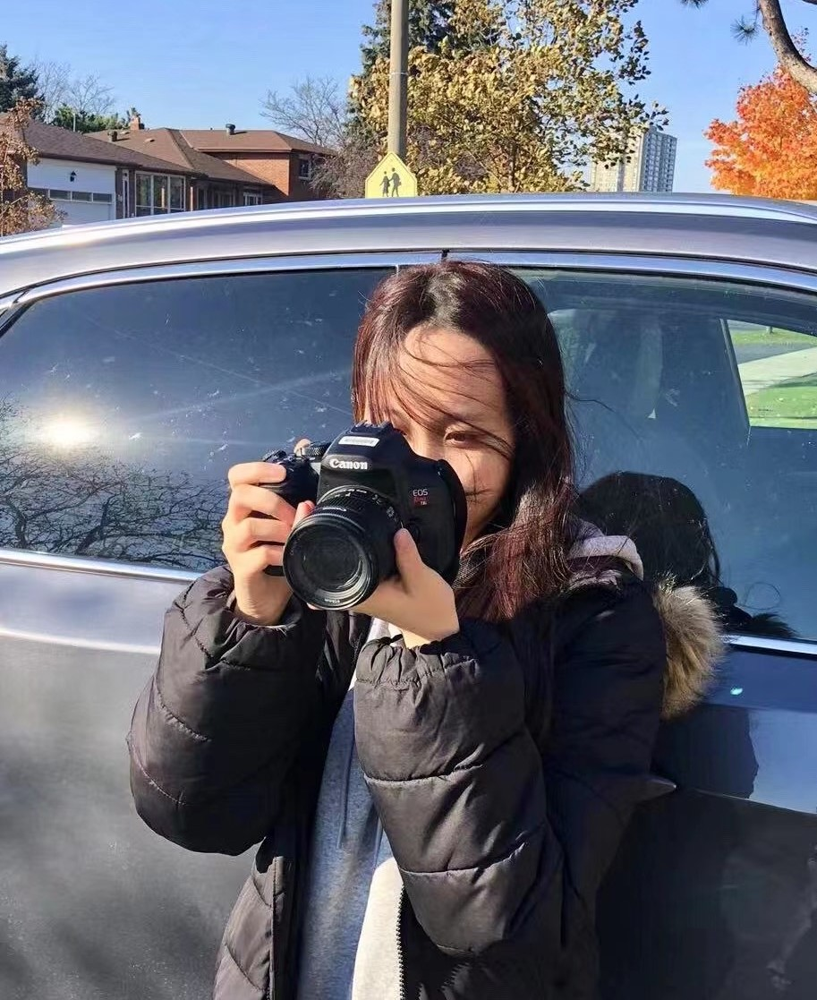
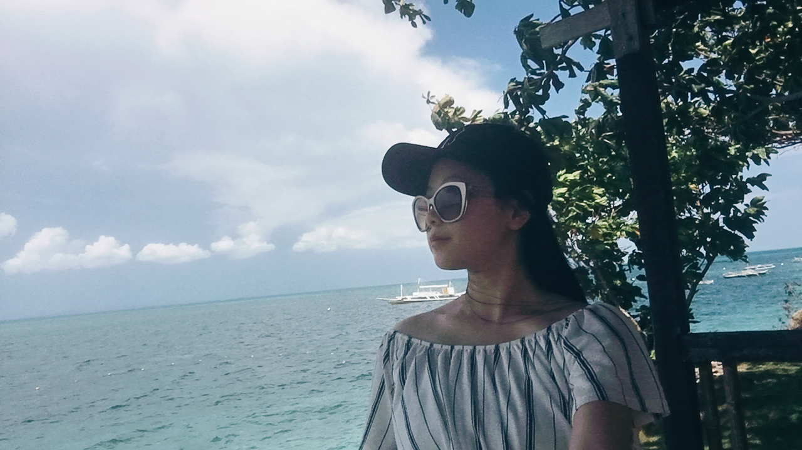
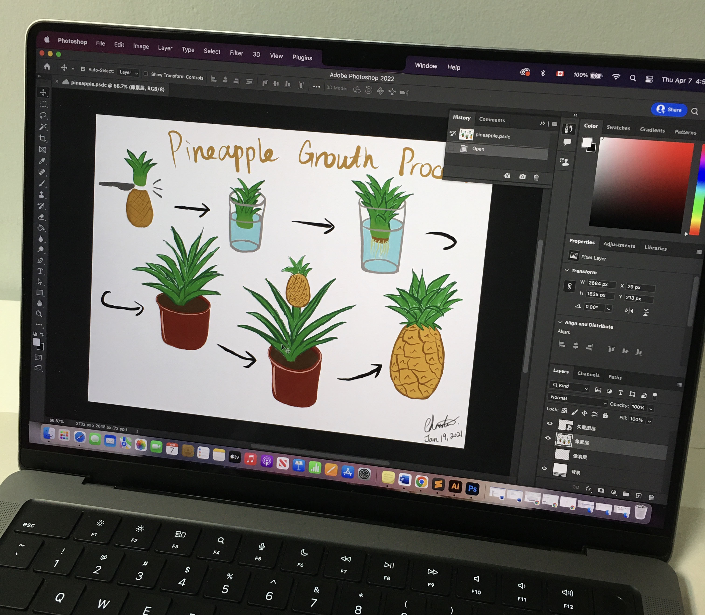

Hey! Nice to meet you.
Biography
Name: Christine Feng
Age: 19
Gender: Female
Nationality: Canadian
Education: University of Toronto
Major: CCIT & Art and Art History
I am a friendly and kind person. I can speak English, Mandarin and Cantonese fluently. I am currently studying in my second year of university. I have mastered creative, critical thinking and problem solving skills. Of course, I am interested in graphic design, UI/UX design, interior design and photography. To become a successful designer or artist is my future career aspiration.
Hobbies
I have a lot of different interests. They are includign drawing, painting, design, travel, shopping, eating, cooking and hotography. I have loved art since I was a child. From elementary school to university, I have been constantly practicing my drawing and artistic skills. Hence, I have created a lot of interesting works. Secondly, I like to travel a lot, and almost every holiday I travel to other countries. The photo on the right was taken when I went to Bohol, Philippines. I especially like the seaside, in addition to the beautiful scenery also what I see during the trip can inspire my design ideas and expand my horizons. I often bring a sketchbook or iPad to quickly record those beautiful scenery moments. Besides design and travel, I like tasting food. I feel that eating food brings me a lot of positive energy and happiness, which helps inspiration of my creative works.
Software Favourites Levels

- Adobe Photoshop
- Adobe Illustrator
- Adobe InDesign
- Procreate
- Adobe Bridge
- SketchUp
- Microsoft Office